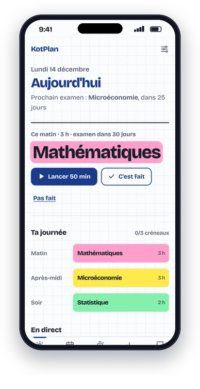
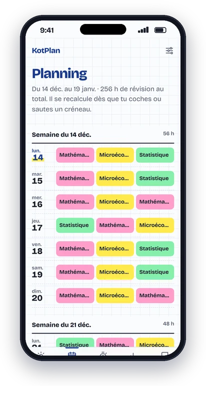

Ton planning de révisions, fait en 2 minutes.
Entre tes dates de partiels ou d'examens. KotPlan répartit tes révisions jour par jour, te dit quoi travailler maintenant, et recalcule tout dès que tu sautes une séance.
Créer mon planning gratuitSans compte, sans pub. Tes données restent sur ton téléphone.

Comment ça marche
- Tu entres tes examens
Date, coefficient et difficulté de chaque matière. Une minute par matière.
- Tu choisis tes créneaux
Matin, après-midi, soir, jours de repos, jours où tu as encore cours.
- Ton planning est prêt
Chaque jour, KotPlan te dit quelle matière réviser et combien de temps.

Mieux qu'un planning sur papier
- Il se recalcule tout seul.
Une séance ratée ? Les heures sont replacées sur les jours suivants. Plus besoin de tout refaire à 23 h.
- Les matières difficiles passent en premier.
Plus de temps pour les matières à gros coefficient, et la veille de chaque examen réservée à la bonne matière.
- Pomodoro intégré.
Lance un minuteur depuis le créneau, ton temps de travail réel est compté par matière.
- Fonctionne hors-ligne.
Installe-la sur l'écran d'accueil comme une vraie app. Pas de compte à créer.
Questions fréquentes
C'est vraiment gratuit ?
Oui, pour 3 matières, avec le planning complet, le Pomodoro et les stats de la semaine. KotPlan Pro (4,99 €, une seule fois, pas d'abonnement) débloque les matières illimitées, les stats complètes et l'export vers Google Agenda.
Ça marche pour le bac, le BTS ou les partiels de fac ?
Oui. Tu indiques le coefficient (ou les ECTS) de chaque matière : plus il est élevé, plus la matière reçoit d'heures.
Où sont stockées mes données ?
Uniquement dans ton navigateur, sur ton appareil. Rien n'est envoyé sur un serveur. Tu peux télécharger une sauvegarde depuis les réglages.
Comment l'installer sur iPhone ou Android ?
Ouvre l'app dans Safari ou Chrome, puis « Partager » → « Sur l'écran d'accueil » (iPhone) ou « Installer l'application » (Android).